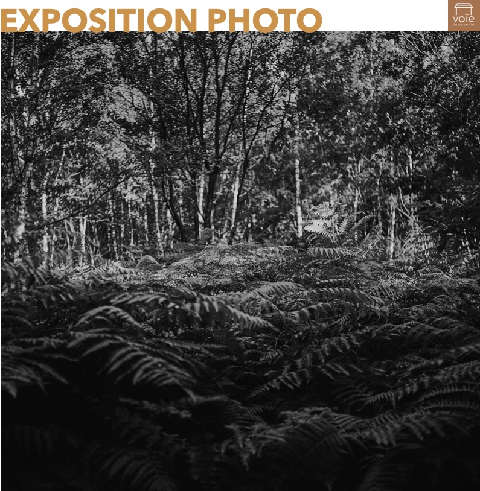
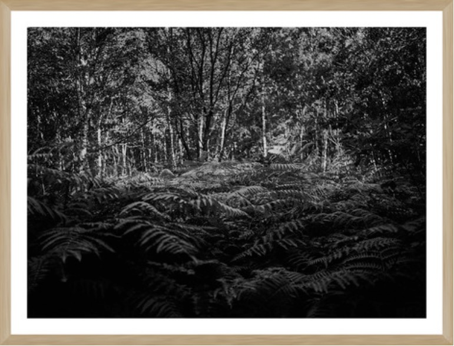
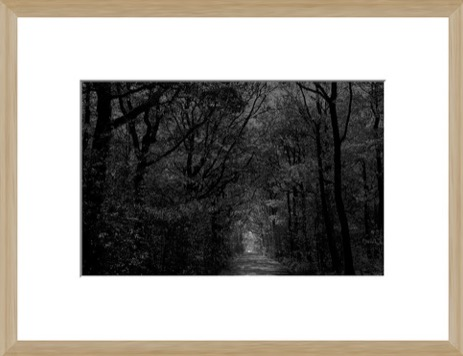

Mathieu THOMASSET est un photographe membre du Studio HANS LUCAS et de la SAIF - Société des Auteurs des arts visuels et de l'Image Fixe.
Formé à Paris aux GOBELINS, l'Ecole de l'Image, et en photographie documentaire au sein de l'EMI - Ecole des Métiers de l’Information - Mathieu est photographe indépendant basé en Vendée et travaille pour les institutionnels, les entreprises et la presse française et étrangère.Après un voyage de près de deux ans sur trois continents, il rejoint le studio Hans Lucas et s’installe dans l’Ouest de la France au coeur du bocage vendéen.Sa pratique photographique vise à documenter la vie de ce territoire en tirant le portrait de ses acteurs et de sa géographie.
La série «Grasla» est une invitation à un voyage dans une forêt luxuriante au passé riche et sombre. A travers des paysages monochromes en clair-obscur se dégage une poésie mélancolique sur les traces de légendes et de fantômes du passé en mémoire à ce lieu perdu qui servit de refuge et de cache pendant les guerres de Vendée.
---------------------///////////////////---------------------

Tirages signésÉdition limitée à 50 exemplairespapier A3 Epson Mat Archivalavec son cadre au format 40x30 cm
Prix unitaire : 140€ Prix pour 3 : 360€ (soit 120€ l’unité)Prix pour la série de 6 : 600€ (soit 100€ l’unité)
---------------------///////////////////---------------------

Tirages signésÉdition limitée à 50 exemplairespapier A4 Epson Premium Lusteravec son cadre et passe-partout au format 40x30 cm
Prix unitaire : 80€ Prix pour 4 : 260€ (soit 65€ l’unité)Prix pour la série de 8 : 400€ (soit 50€ l’unité)
---------------------///////////////////---------------------